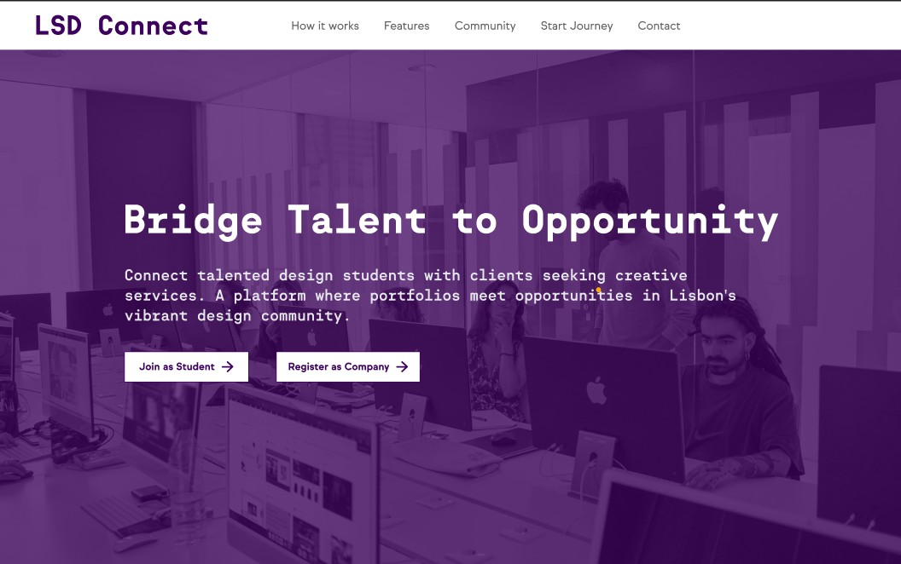
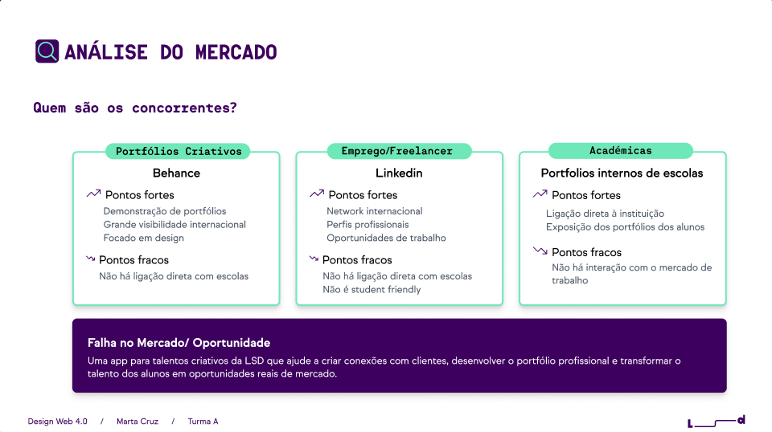
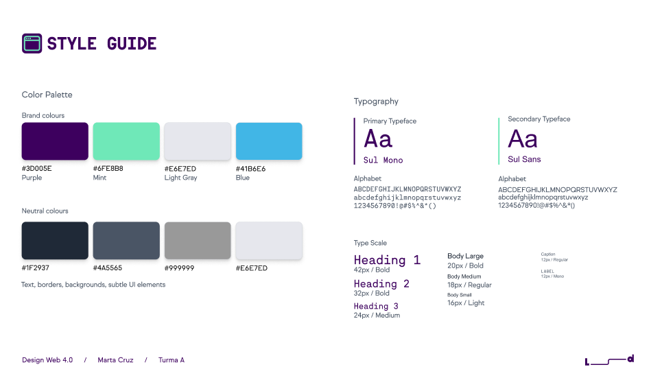

PROJECT 3

LSD Connect
A landing page concept for a career platform connecting LSD students with the design industry.
OVERVIEW
Most design graduates in Portugal enter the job market without a structured way to reach employers. Youth unemployment sits at 23.9% in Portugal, and designers are disproportionately affected. LSD Connect is a concept platform that turns that gap into a direct connection: a space where LSD students showcase their portfolios and companies find vetted design talent, built specifically for the school's community. A usability test with three participants confirmed the concept landed — all three described it as intuitive and clear, and one LSD student said unprompted that it "aligns with the school's mission."
THE PROBLEM
Design graduates have talent. They just have nowhere to put it.
The transition from design school to professional work is poorly served by existing platforms. LinkedIn is not student-friendly. Behance has no direct connections to schools or employers. Internal school platforms exist but don't interact with the market. LSD students were left with career resources scattered across emails and announcements, no structured way to reach potential employers, and no visibility into what kind of opportunities existed for them. The brief asked: how could the LSD itself become the bridge?

Market analysis.
PROCESS
Two audiences, one page.
The central design challenge was that the platform serves two completely different users: students looking for work and companies looking for talent. Most platforms solve this by building separate pages. The decision here was to address both on the same landing page, using a parallel structure where every section speaks to both sides simultaneously.
The process moved from brief and persona definition through competitive analysis, then lo-fi wireframes in desktop and mobile, then a style guide built around LSD's own visual identity before reaching hi-fi.
Usability testing happened with three participants: two LSD students and one university student from outside the school. The main issue found was with the carousel in the features section and ambiguity around the word "client" — it was unclear whether it referred to companies or to the students themselves. The word was changed to "companies" in the final version.

Style guide for fonts and colors.
OUTCOME
All 3 testers described the page as intuitive, clear and simple. One LSD student said she was "mega interested in the app" and that "it aligns with the school's mission." The "How it works" section scored the clearest response: "a five-year old could understand the steps." The community section prompted an unprompted response: "It makes me feel like I am not alone in this process."
REFLECTION
Looking at it now through the lens of landing page best practices, the page has structural gaps. There is no social proof, no testimonials, no numbers, no trust signals that would give a first-time visitor a reason to believe the platform works. There is no FAQ section to pre-empt the doubts a student or employer would have before signing up. The footer retains full navigation links, which gives users an exit before they have converted — a landing page should strip those out and keep only what serves the single goal. The navigation menu has the same problem: four links that lead away from the CTA. And there should be a stronger, more cohesive CTA, repeated at multiple points in the page, to increase the chances of conversion.